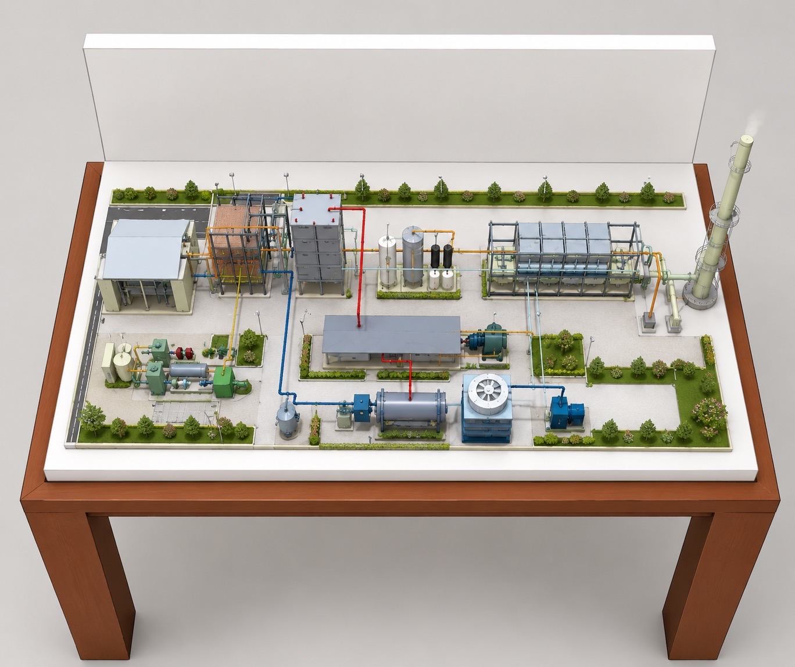

GREEN ENERGY LEARNING
สื่อการเรียนการสอนแบบจำลองโรงผลิตพลังงานจากหลุมฝังกลบขยะ
เรียนรู้หลักการทำงานและส่วนประกอบของแบบจำลองผ่านหัวข้อการเรียนรู้ 10 หัวข้อ

เรียนรู้หลักการทำงานและส่วนประกอบของแบบจำลองผ่านหัวข้อการเรียนรู้ 10 หัวข้อ
